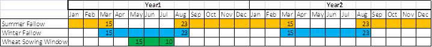
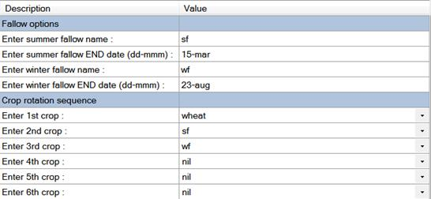
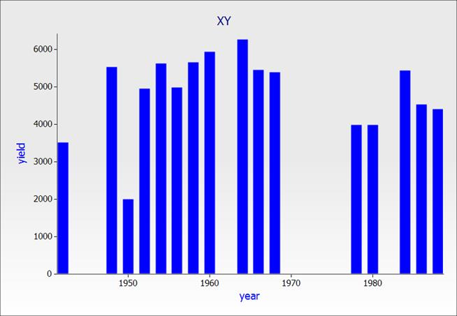
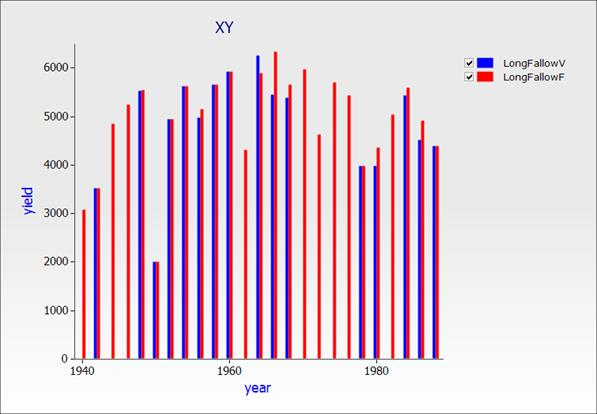
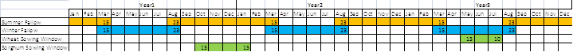
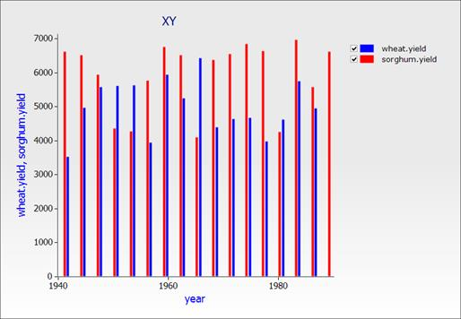

Creating A Wheat Long Fallow Rotation
In this exercise you will create a wheat long fallow rotation where wheat is potentially sown every second year using the following schedule:

1. Create a new simulation based on "Rotation Sample.apsim".
2. Change the name of the simulation to "LongFallowV" and save to the same filename.
3. Check met file is Goondiwindi 1940-1989 and make the simulation run for entire length of met file (1/01/1940 to 31/12/1989).
4. Change the soil to Heavy Clay from the Training Soils toolbox (see Module 1 if you don’t have it).
5. Set starting water to 100% filled from the top.
6. Set starting nitrogen to 0.1 ppm in every layer (copy the layer structure from the Water node) for both NO3 and NH4.
7. Delete the cotton and chickpea crops from the simulation. Delete all the sowing rules and harvesting rules for every crop other than Wheat.
8. Change minimum allowable soil water criteria of the Wheat sowing rule to 0 so that it doesn't play a part in the sowing criteria. You’ll notice the correct sowing window is already present.
9. Set the crop order in the Rotations rule to the following:
|
1st crop
|
wheat
|
|
2nd crop
|
sf
|
|
3rd crop
|
wf
|
|
4th - 6th crop
|
nil
|
You have to type in sw, wf and nil in manually. sf, wf and nil are standard abbreviations. sf for summer fallow, wf for winter fallow and nil for the point where the rotation will return to the beginning and repeat. APSIM will not recognise anything else. When you’re finished it should like the following:

10. Report the following variables:
|
Component
|
Variable
|
|
Clock
|
dd/mm/yyyy as Date
|
|
|
year
|
|
Wheat
|
Yield
|
11. Change the output frequency to harvesting.
12. Run APSIM and plot year vs yield as a bar chart using a graph component.

Fixed Vs. Variable Rotation
1. Duplicate the previous simulation and name it LongFallowF.
2. Change the wheat sowing rules in the LongFallowF simulation from “must sow = No” to “must sow = Yes”.
3. Run this second simulation and plot year vs. yield for both simulations on the same graph using a graph component.

Sorghum – Wheat Rotation
We will now look at a three year rotation with a fallow followed by a sorghum crop then a wheat crop in the third year.

1. Save your current project to a new file called SorghumWheat.apsim. Remember to use the “Save As” button NOT “Save”. Rename the LongfallowF simulation to “SorghumWheat Rotation” and remove the other simulation.
2. Add Sorghum crop from the toolbox.
3. Add Sorghum sowing rule from the toolbox and set the cultivar to “early”.
4. Rename Fertilise at sowing rule to WheatFertilise. Copy it, and rename the copy SorghumFertilise (make sure to change the "On which module should the event come from" property to sorghum).
5. Add a Harvest Rule from the toolbox, rename to SorghumHarvesting and change crop from wheat to sorghum.
6. Make sure the sowing windows for sorghum and wheat sowing rules match those in the table above.
7. Set Rotation sequence to sf, wf, sorghum, wf, sf, wheat, nil.
8. Run and graph your simulation.
